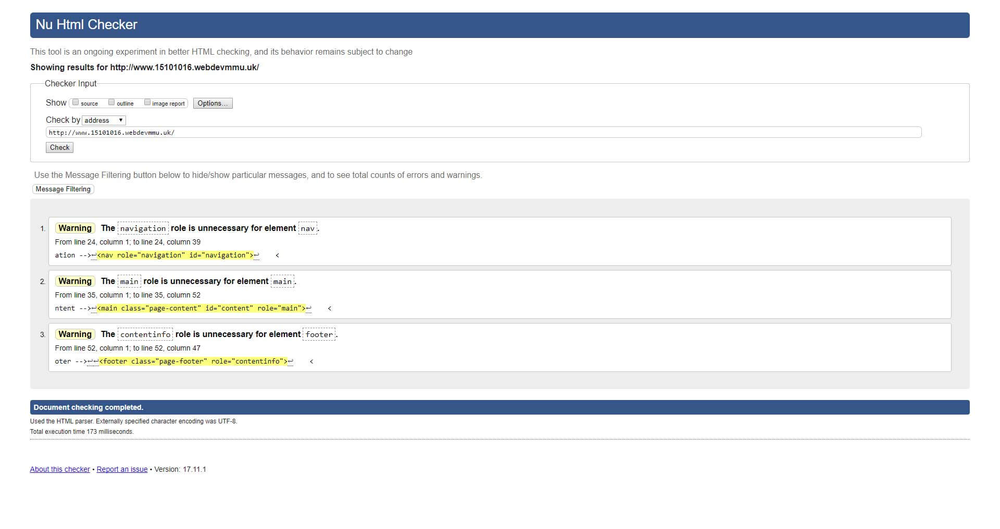
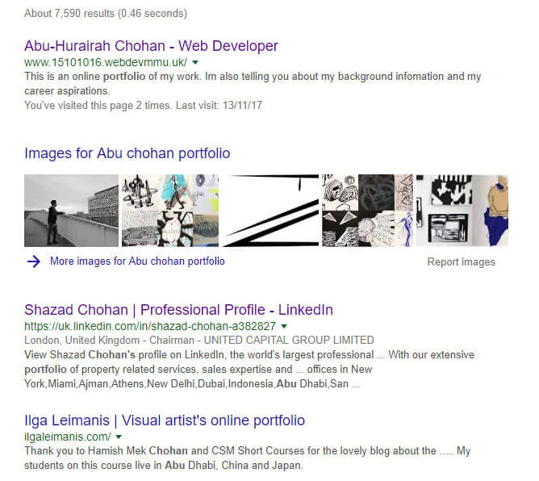
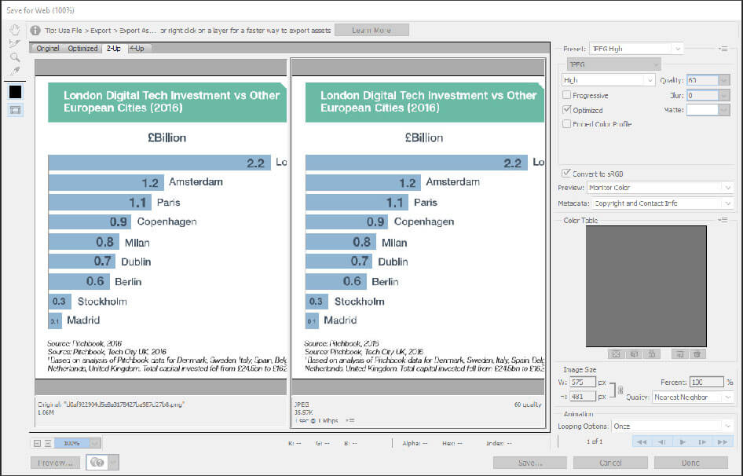

Performance and Optimization
Warp Speed!
Personally, this is the most important step of creating a website for me. What's the point of making something that you put so much effort into not being able to be accessed by the user? Testing and optimising the website allows you to find problems that you may have missed. The three aspects I’m going to talk about, tie in together so for good performance and optimisation you need to use all aspects on your website.
Validation
I used the W3C Validator to validate my web pages. It’s a great tool that allows me to check if anything is wrong with my HTML. Validating your website is a great way of improving speed and semantics. This ensures it works for everyone all the time. This validator can also be used on CSS. Having dead code increases loading times and makes it harder for other people to read.
SEO, what's the point?
Search engine optimisation or SEO for short determines how high or low your website ranking is on google. SEO is so important there are businesses that focus on just improving the SEO of other people’s businesses. It’s crucial because without it you probably wouldn’t have found this website. It's the difference between people finding your website and it being lost in within the internet. Think of it as you make a great product but no one can find it.
So how do I do it?
There are a lot of contributing factors to Google's algorithm, this has not been disclosed to the public and it's always changing. A SEO article by Kate Morris explains what meta tags are relevant. In the past business used to cram a lot of words inside the meta keywords, this used to increase ranking. However, Google has gotten smarter and uses many other factors before this. Most of the meta tags have a big part in SEO; content type, title, description and viewport are the main ones. Putting these in the head of your website and filling them out correctly will improve your chances of being the first search result by google.
Optimization
For me this topic hits close to home, I've never had the best internet connection and what really got to me was not being able to go on certain sites because they would have massive files I would have to download. The web is all about being equal to everyone. The steps I took to my website was removing all unused CSS, image optimization and semantic markup.
The biggest factor here would have to be image optimization. Its very simple to do. But has drastic effects. I achieved this by using Photoshop's save for web function. It brought my file size from 1.06 megabyte to only 36 kilobytes. Another factor is alt text it makes you describe the image into words making the website accessible to blind people. This all benefits mobile users as well, mobile users have a limited data plan and if they come to your website they don't want to have to download your life's work.
Word Count: 510
Refrences:
Hayes, M. (2017). 10 Must Know Image Optimization Tips – Shopify. [online] Shopify's Ecommerce Blog - Ecommerce News, Online Store Tips & More. Available at: https://www.shopify.co.uk/blog/7412852-10-must-know-image-optimization-tips [Accessed 14 Nov. 2017].
Morris, K. (2017). The Wonderful World of SEO Meta Tags [Refreshed for 2017]. [online] Moz. Available at: https://moz.com/blog/seo-meta-tags [Accessed 10 Nov. 2017].